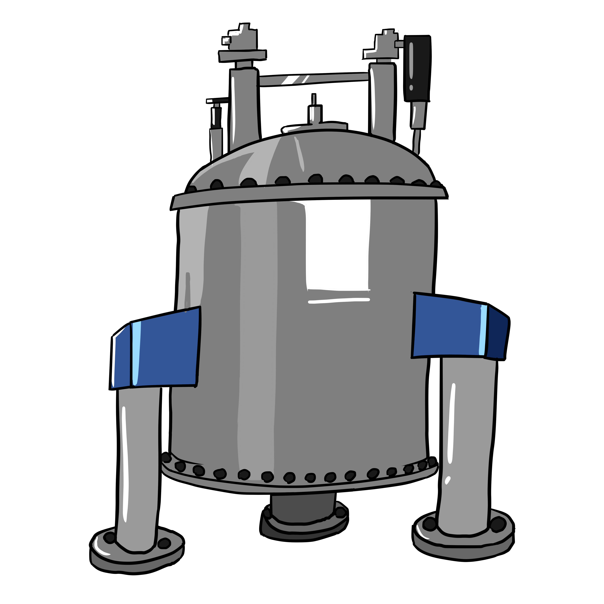
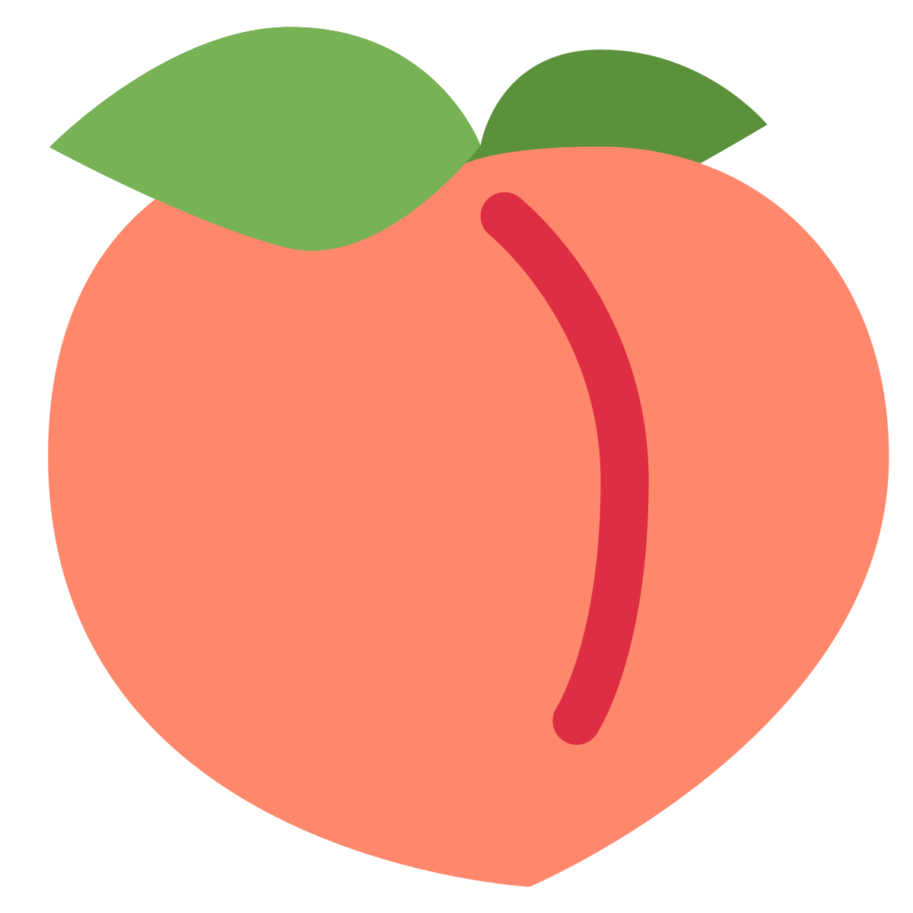
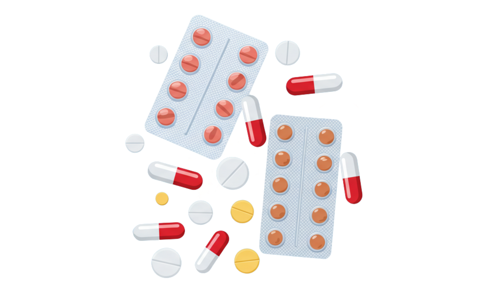

LS6036 Python Course
Throughout Teaching Block 1 you will be learning programming using the Python language.
Advances in Life Sciences has let to the creation of terrabytes of Big Data. We can now sequence millions of bases of DNA, calculate expression levels of thousands of proteins and track the movements of whales around the world. In order to be able to make sense of these large datasets, we use programming languages. It would be quite difficult to calculate a statistically significant result if your dataset has more than 1000 values!
You will have already done some programming using R - python is similar is several ways, but is much more flexible.
Why Python and not R?
R is a very specialised language used within Life Sciences. It is excellent for some speicific tasks - primarily using statistical tests, making very nicely styled graphs, and making geographical maps.
Python is much more flexible - it has much wider uses and is in fact the most popular programming language. Learning python also helps you learn the programming fundamentals, which make it much easier to learn other languages in the future (such as Javascript and HTML for web development).
There’s a huge amount of tools written in python, which also means you don’t need to rewrite everything from scratch. There are python libraries for almost anything, from scientific calculations to plotting to machine learning.
How is this used in Biochemistry, Genetics, Molecular Biology and Pharmacology?
Below is a table of a recent publication for each subject which used python in the analysis - quite varied!
| Degree | Paper title | Icon |
|---|---|---|
| Biochemistry | Automatic Identification of Potential Cellular Metabolites for Untargeted NMR Metabolomics |  |
| Genetics and Molecular Biology | Screening of MYB1R1 interaction with LDOX promoter to regulate anthocyanin biosynthesis in peaches |  |
| Pharmacology | Development of an Artificial Intelligence Powered Medication Risk Score Calculator Application |  |
Will I need to use Python in my project?
In Teaching Block 2 you’ll be doing a bioinformatics project. It is up to you whether or not to use python, or to use the online bioinformatics tools you’ll be shown in TB2.
You may also end up using python for your LS6014 project if you need to do some data analysis!
What should I be doing?
First get yourself set up with Python and VSCode or Google Colab - click the “Set Up” tab for instructions.
Next start the classes under the “Learn” tab. The material for the first few weeks is already available - you can work through them at your own pace.
Each page will cover a new concept, or have an activity on for you to try. As you work through, try to experiment - change parts of the code examples and see if it will still work. This is how you figure out how it works.
If you have any other questions, grab a member of teaching staff in the session or email Dr Lizzie Wadsworth at L.Wadsworth@kingston.ac.uk